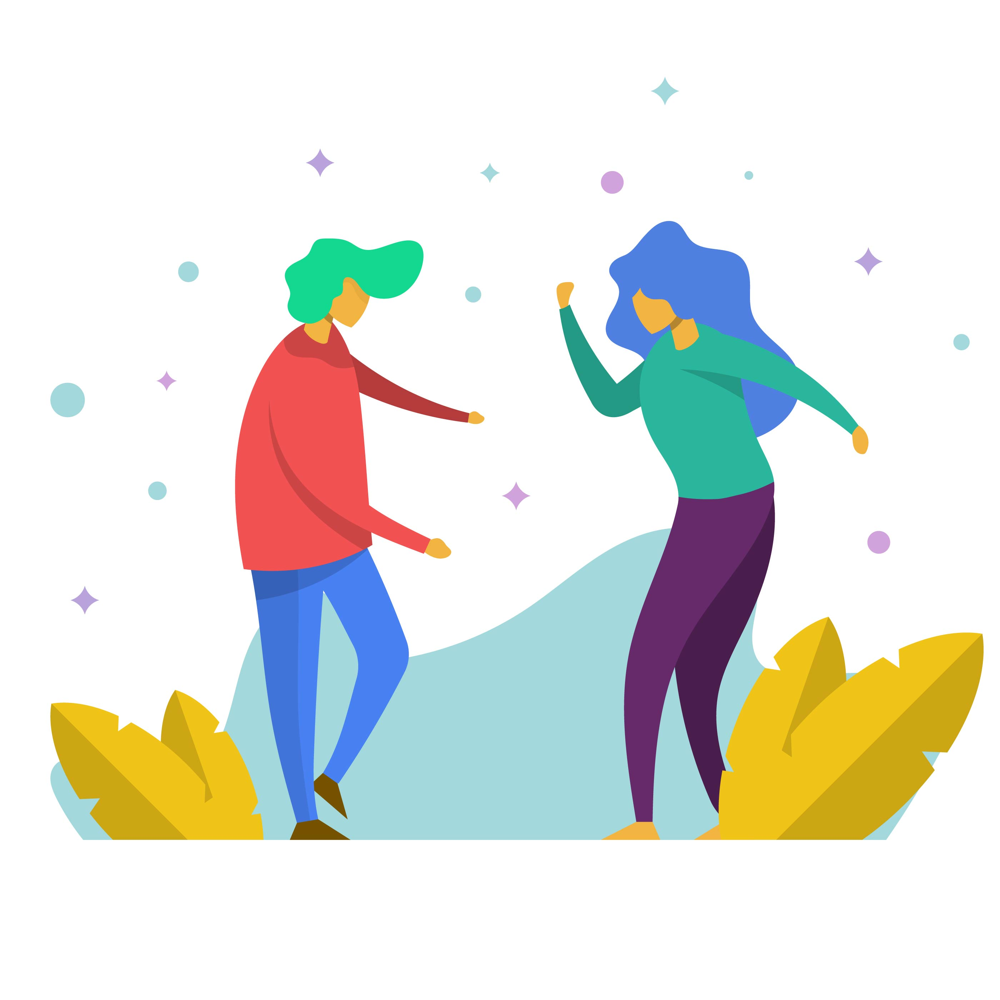

<ion-header class="ion-no-border">
  <ion-toolbar>
    <ion-title>
      Registrar Evento
    </ion-title>
  </ion-toolbar>
</ion-header>

<body>
  <ion-list class="register-content">
    <ion-item class="creador">
      <ion-label  type="text" name="creador">{{this.usuario}}</ion-label>
    </ion-item>
    <ion-item class="nombreEvento">
      <ion-input  [(ngModel)]="nombreEvento"  type="text" name="nombreEvento" placeholder="*Nombre del evento" autofocus required></ion-input>
    </ion-item>
  <ion-item class="ciudad">
    <ion-input type="text" name="ciudad" readonly>{{this.ciudad}}</ion-input>
  </ion-item>
  <ion-item class="direccion">
      <ion-input  [(ngModel)]="direccion"  type="text" name="direccion" placeholder="*Dirección" required></ion-input>
    </ion-item>
   <ion-item class="fecha">
    <ion-datetime [(ngModel)]="fecha"  name="fecha"  mmin="2021" max="2023" displayFormat="DD/MM/YYYY" pikerFormat="DD MM YYYY" placeholder="*Fecha" required></ion-datetime>
  </ion-item>
  <ion-item class="hora">
    <ion-datetime [(ngModel)]="hora"  name="hora" displayFormat="HH:mm" placeholder="*Hora" required></ion-datetime>
  </ion-item>
  <div style="text-align: center;">
    <ion-button class="button-galeria" style="margin-top: 10px;"color="primary" fill="outline" slot="end" (click)="abrirGaleria()">
        <ion-icon name="image-outline"></ion-icon>
        <ion-label style="margin-left: 10px;">Galería</ion-label>
    </ion-button>
    <ion-button class="button-camara" style="margin-top: 10px;"color="primary" fill="outline" slot="end" (click)="abrirCamara()">
        <ion-icon name="camera-outline"></ion-icon>
        <ion-label style="margin-left: 10px;">Cámara</ion-label>
    </ion-button>
    </div>
  </ion-list>
  <div class="registration-event">
    
  </div>
</body>

<ion-footer class="bar-stable">
  <ion-toolbar color="light">
    <div style="text-align: center;">
  <ion-button (click)="guardar()" class="save-button" disabled="{{!this.nombreEvento || !this.direccion || !this.fecha || !this.hora}}" color="secondary" style="margin-left:0%" >
    <ion-icon name="save-outline"></ion-icon>
    <ion-label style="margin-left: 10px;">Guardar</ion-label>
  </ion-button>
  <ion-button (click)="cancelar()" class="cancel-button" color="secondary" style="margin-left:5%" >
    <ion-icon name="close"></ion-icon>
    <ion-label style="margin-left: 10px;">Cancelar</ion-label>
  </ion-button> 
</div>
</ion-toolbar>
</ion-footer>